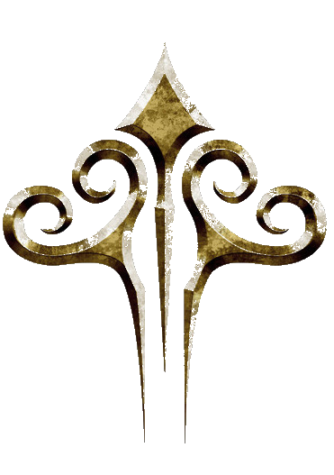

Masari
"We are gods once more!"
Having mastered the arts of energy and matter, the Masari at one point dominated the galaxy before being brought low by the forbearers of the Hierarchy in a devestating rebellion. One Masari city-ship fled to earth during the war and the survivors intergrated themselves into human culture before retreating beneath the ocean and fading into myth. The events of Universe at War: Earth Assault eventually result in the Masari awakening from their stasis and emerging to do battle with their ancient foe.